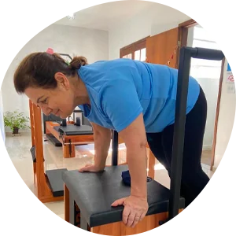
Você terá mais Consciência corporal
Perceber o seu corpo e a sua postura, aprender como o seu corpo funciona e como ele se movimenta, e conseguir controlar cada movimento é o ponto de partida para você ter um corpo saudável!
Em breve um novo site para você!
Nós acreditamos que podemos mudar a sua vida!
Tenho interesse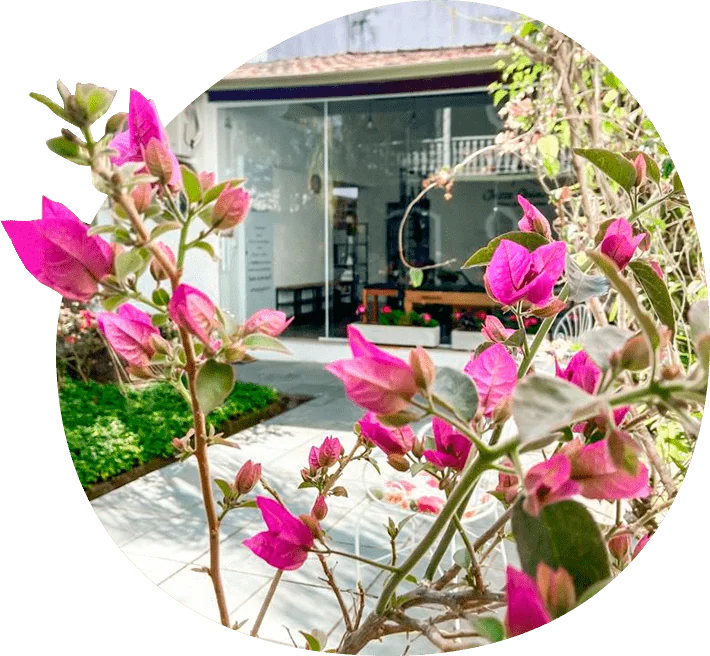
Você acaba de encontrar o lugar ideal para cuidar da sua saúde. Um ambiente aconchegante em contato com a natureza para você se exercitar com qualidade e ter um atendimento personalizado para você se livrar das dores no corpo! Unindo as técnicas contemporâneas do pilates com uma minuciosa avaliação da biomecânica (maneira correta de se movimentar o corpo) conseguimos corrigir algumas falhas nesses movimentos que podem estar sobrecarregando suas articulações e gerando lesões, conseguindo assim direcionar o melhor exercício para ser feito e reequilibrar o seu corpo. Nós utilizamos o método Pilates como uma estratégia inteligente para reorganizar o seu corpo e fazer a diferença na sua vida.
Quero agendar um horário!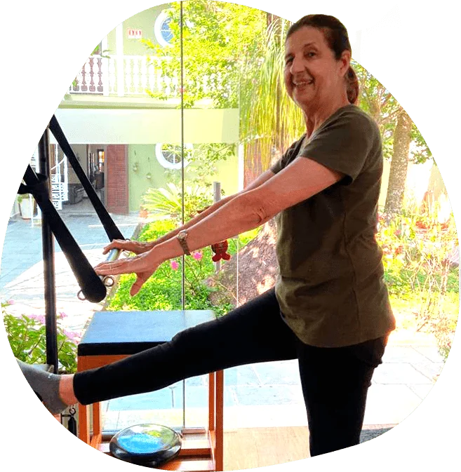
E como fazer do nosso corpo um lugar habitável até o último dia de nossas vidas? Conhecendo o seu corpo e sabendo quais são as melhores estratégias para você ter uma postura correta e um corpo forte livre de dores! É comum acontecer das pessoas iniciarem alguma atividade física e fazer os exercícios de forma errada e mal orientada. Isso pode ser a causa do surgimento de dores e lesões. O foco principal do nosso trabalho é orientar você a fazer uma atividade física que preserve seu corpo e suas articulações, beneficiando o seu corpo e a sua saúde.
Te daremos 5 motivos para praticar pilates com nossa equipe: Se você quer aprender a fazer exercícios de forma eficiente, ou se você sofre com dores no corpo e problemas posturais, fraqueza muscular e dificuldade para se movimentar e praticar exercícios, o pilates é sua solução mais prática e completa!

Perceber o seu corpo e a sua postura, aprender como o seu corpo funciona e como ele se movimenta, e conseguir controlar cada movimento é o ponto de partida para você ter um corpo saudável!
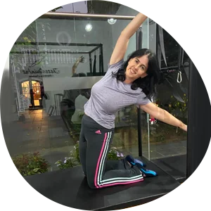
Ter um corpo que se movimenta de maneira livre sem restrições, sem dor e que seja capaz de fazer tudo o que você precisa é fundamental para todo ser humano.
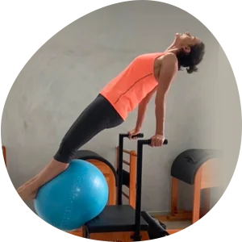
Um corpo forte vai muito além da estética. Ter músculos fortes é fundamental para não sobrecarregarmos nossas articulações e termos mais funcionalidade no nossos dia a dia.
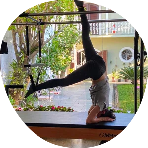
Os exercícios que nós propomos trabalham a musculatura mais interna do nosso corpo, que é a responsável por gerar estabilidade nas nossas articulações, evitando assim sobrecargas articulares e as lesões.
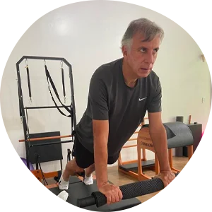
Com o corpo devidamente alinhado, alongado e fortalecido, você ganha liberdade de movimento e mais resistência para as atividades diárias, assim como para a prática de outras atividades físicas.
“Quando comecei a frequentar o Studio Niwa Pilates me sentia travada e com fortes dores na lombar que muito incomodavam e hoje, após 6 meses, me sinto bem melhor, sem dor e mais disposição. Tenho 76 anos e até começar no pilates, quase não fiz exercícios, não gosto de academia. Devo muito a Jesse e sua equipe que tem muita paciência e carinho com seus alunos.”
Ana Elisa Anae
A Jesse é uma ótima instrutora de pilates. Muito atenciosa e cuidadosa. Faço pilates com ela há quase um ano e meio. Sempre sofri com muitas dores na coluna, nos ombros, pescoço… e graças ao pilates, sinto que essas dores diminuíram. O ambiente do studio é muito bom. Sou muito agradecida à Jesse e a equipe dela.
Michino Tani
O pilates me ajuda a executar as atividades cotidianas com mais facilidade e sem as dores na coluna que costumava a ter. Recomendo, as profissionais além de atenciosas são extremamente capacitadas.
Maria do Carmo Martins de Lima
“Ótimo Studio! Fisioterapeutas competentes, atenciosas e sempre preocupadas com a nossa saúde. Studio muito bem montado, limpo, arejado, higienizado e equipamentos em ótimo estado de conservação. Eu e meu marido estamos muito felizes. Frequento esse Studio de Pilates há um ano. No início tinha muitas dificuldades em realizar alguns exercícios, com dores no ombro direito, falta de equilíbrio e insegurança nos equipamentos. Hoje, sem dores, confiante e após cada aula, aquela sensação do dever cumprido, com alegria!”
Olga Edagi
“São profissionais competentes que sabem o que fazem, tem me ajudado muito nas dores das juntas articulares (artrose), na postura, no condicionamento físico, além de outros benefícios. Tenho 70 anos, estou melhorando cada vez mais e recomendo a todos.”
Marcos Maldonado
“Melhor studio de pilates!! Com toda certeza o acompanhamento das aulas de pilates fizeram a diferença durante toda minha gestação. Studio lindo, organizado com as melhores instrutoras de pilates.”
Victoria Carolina Silva
“Maravilhosa! É um lugar que eu amo estar! Mesmo o dia que estou cansada, quando estou lá é relaxante demais! Ambiente tranquilo, bonito e gostoso! Pessoas maravilhosas!”
Pâmela Maximiano Ribeiro
Unindo nosso amor pela fisioterapia e em elevar a qualidade de vida das pessoas, nós da equipe Niwa Pilates utilizamos o método pilates como ferramenta de reabilitação e cura. Aqui no Studio você encontrará um ambiente acolhedor e confortável, focado no atendimento além do método Pilates para a resolução do seu caso, e no ensinamento de cada cliente sobre como o seu corpo funciona e a maneira certa de tratar o seu problema independente do seu diagnóstico médico. Nossa missão é, além de prevenir e tratar dores, ensinar nossos clientes a cuidarem melhor do seu corpo e sobre sua condição clínica, e o que ele deve fazer para viver uma vida plena e com saúde.
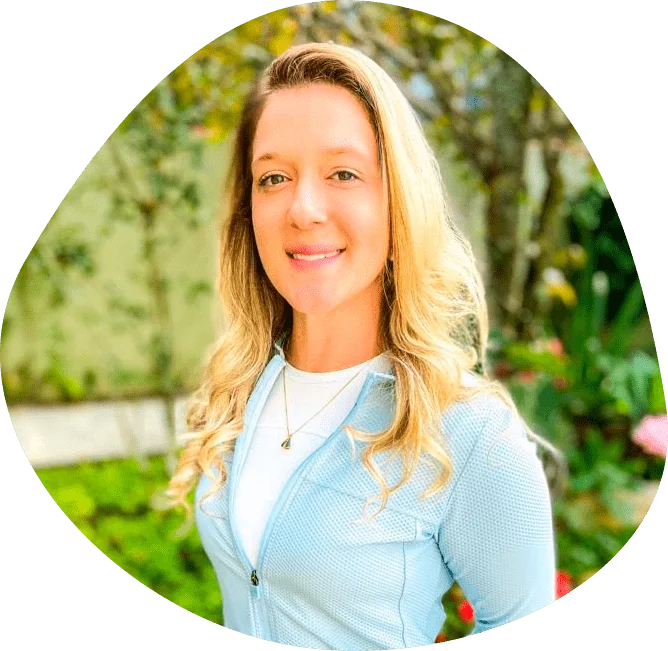
Formada em 2009 e atuando com o método pilates desde 2012, a fisioterapeuta Jesse Quintas inaugurou o Niwa Pilates em 5 de outubro de 2020. Através de seus cursos e conhecimentos dentro da área da fisioterapia e Pilates, desenvolveu uma dinâmica de atendimentos para tratar pessoas que apresentam dores e lesões no corpo, principalmente na coluna. Essa proposta de atendimento é mantida por toda sua equipe que juntas, trabalham em busca do melhor atendimento rumo a satisfação de nossos clientes.
Agendar uma aula experimentalPor ser uma atividade que visa a melhora da postura e de condicionamento físico, o pilates não possui contraindicações! A partir da avaliação clínica do cliente, mulheres, homens, adolescentes, idosos, atletas e pessoas com dores e restrições podem aproveitar seus benefícios.
O Pilates clínico envolve adaptações dos exercícios de acordo com as limitações e recomendações médicas para garantirmos o alívio da dor e assim ganhar mobilidade nas articulações, relaxar tensões musculares e fortalecer todo corpo ajudando assim a tratar a sua queixa.
Com certeza! Nós faremos uma avaliação do seu caso, te explicamos o que está acontecendo com você e com a sua coluna, vamos explicar como será o nosso tratamento para resolvermos sua dor. Quanto mais você conhece sobre si, mais fácil fica de você se curar! Ter dor na coluna não é o principal problema. Agora, não fazer exercícios específicos e direcionados para tratar isso que sim, é um problema!
Com certeza! Prevenir sempre vai ser o melhor caminho! Você vai aprender sobre o seu corpo e a forma correta de se movimentar vai evitar que você tenha dores e lesões futuras! Comece o pilates antes que você precisa do pilates
Sim, porém a frequência e a regularidade são fundamentais para atingir os resultados esperados. Temos diversos alunos que fazem pilates conosco a mais de 10 anos.
Nossa primeira aula na verdade será uma aula-avaliação. Nós vamos nos conhecer melhor, você conhecer nosso espaço. Você também apresentar suas questões a serem trabalhadas, nós entendermos e explicarmos seu caso para assim, alinharmos as expectativas e quais seriam os melhores exercícios para você resolver seu caso.
1 – Alterações posturais 2 – Falta de mobilidade e alongamento 3 – Tensões musculares 4 – Dores na coluna 5 – Hérnias de disco 6 – Dores articulares 7 – Pré e pós operatório de cirurgias ortopédicas 8 – Como forma de prevenir dores e lesões 9 – Como complemento na prática de outras atividades físicas 10 – Para todos que desejam ter uma coluna saudável, um corpo forte e uma vida mais feliz!
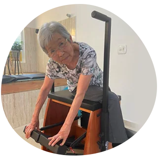
Trabalhamos exercícios para garantir a autonomia do idoso para que ele seja funcional nas suas atividades do dia dia, tendo assim equilíbrio, mobilidade, força e independência.
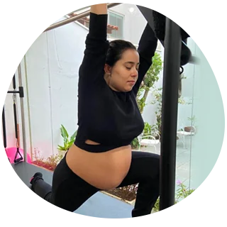
Para ter uma gestação tranquila, cada fase precisa de exercícios direcionados para evitar dores no corpo e para manter o corpo da gestante forte, e também para facilitar no momento do parto.
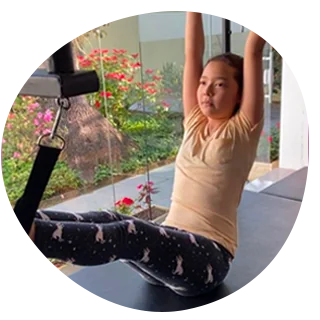
Posturas erradas adquiridas na adolescência podem levar a várias lesões no futuro. Corrigir essa postura e manter esse corpo alinhado durante o crescimento é fundamental.
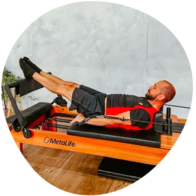
Praticantes de todas as modalidades esportivas se beneficiam com a prática do pilates por trabalharmos a correção do gesto esportivo e refinamento da performance corporal, e por trabalharmos músculos profundos que não conseguimos trabalhar em outro exercício de força (musculação, por exemplo).
Quanto mais você conhece o seu corpo, mais saúde você tem! Não se acostume a viver com dores que podem ser curadas. Com certeza nós do Niwa Pilates podemos te ajudar nessa jornada rumo a uma vida sem dor!
Av. Laurinda Cardoso Mello Freire, 477 - Vila Oliveira, Mogi das Cruzes - SP, 08780-280
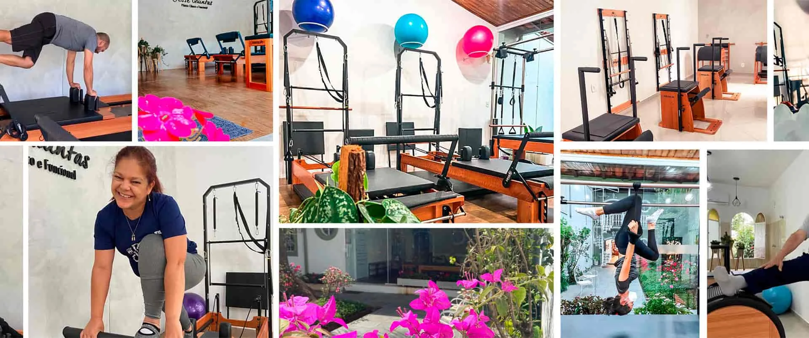